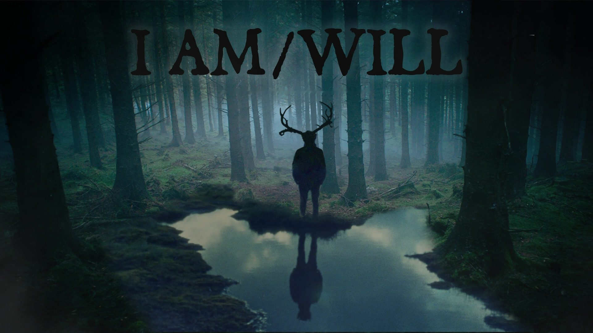
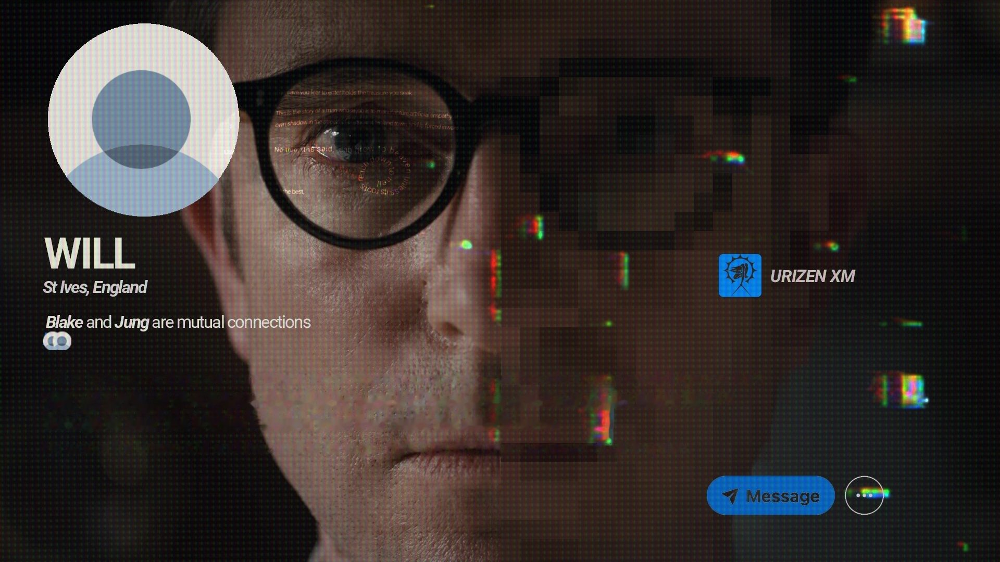
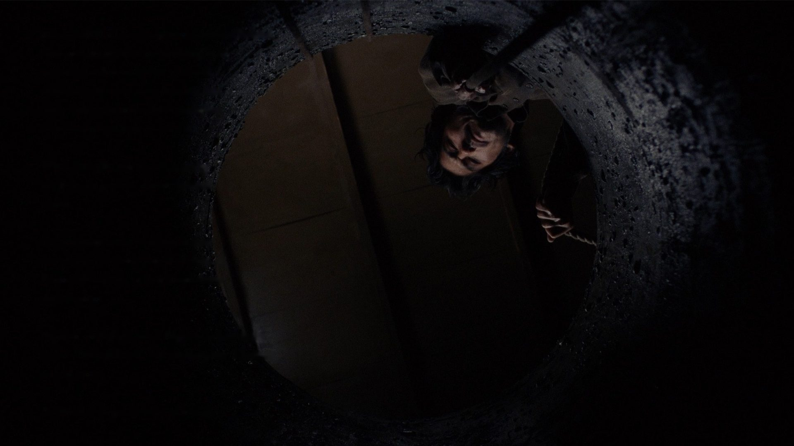
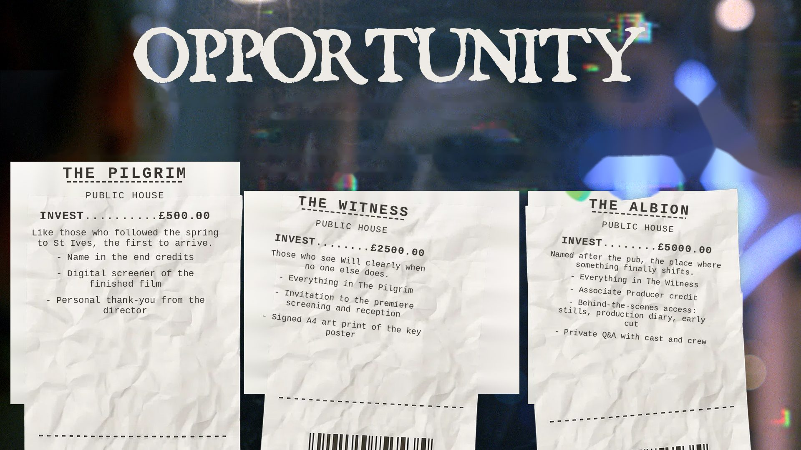
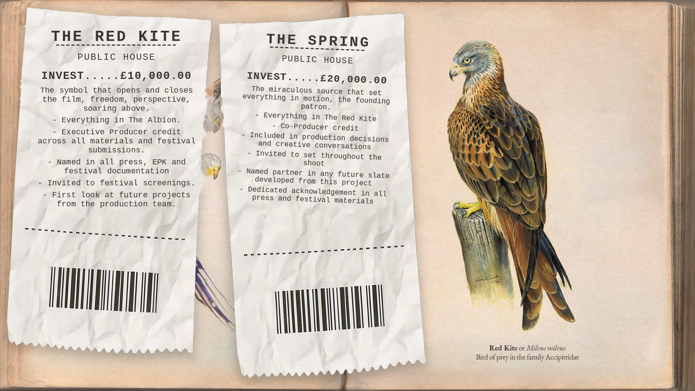

I AM / WILL
“No tree can grow to heaven unless its roots reach down to hell.”

Will · St Ives, England
Will, an architect of AI-human connection, begins to unravel as visions of a saint haunt him through St Ives; the ancient Fenland town that bears the saint’s name.

The production
We’re planning to shoot this 15 minute short in late 2026 or early 2027, in the medieval market town of St Ives, Cambridgeshire. Made with the support of the local town, we’re bringing to life the story of the Persian Bishop who travelled thousands of miles to settle here, and whose presence, and the miracles that followed, put this town on the map.
If you’d like to know more, please get in touch below.
Or to invest in the project and become part of St Ives’ history in the making, please give what you can, no amount is too small. Below are the investment tiers and what each one offers.

Opportunity
This is a story about what’s beneath and within the silence people carry. No amount is too small to help share the weight. Every investment level helps carry it forward.
For UK taxpayers, this investment qualifies for the Enterprise Investment Scheme (EIS). Investments of £2,500 and over may be eligible for a 30% tax rebate. Please contact us to confirm your eligibility.
- Name in the end credits
- Digital screener of the finished film
- Personal thank-you from the director
- Everything in The Pilgrim
- Invitation to the premiere screening and reception
- Signed A4 art print of the key poster
- Everything in The Witness
- Associate Producer credit
- Behind-the-scenes access: stills, production diary, early cut
- Private Q&A with cast and crew

Opportunity · continued
- Everything in The Albion
- Executive Producer credit across all materials and festival submissions
- Named in all press, EPK and festival documentation
- Invited to festival screenings
- First look at future projects from the production team
- Everything in The Red Kite
- Co-Producer credit
- Included in production decisions and creative conversations
- Invited to set throughout the shoot
- Named partner in any future slate developed from this project
- Dedicated acknowledgement in all press and festival materials
For more information, or if you’re investing more than £2,500 and want to discuss EIS, please email iamwill@planninepictures.com.
Please quote the reference I AM WILL with your donation, then confirm your full name and the amount donated by email.